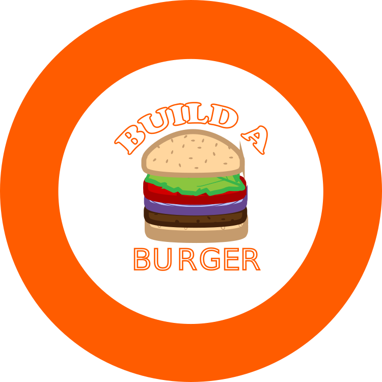
ANIMATION // BUILD A' BURGER
Det fjerde tema var grundlæggende animation. Her lærte jeg css-animationer og JavaScript, herunder
metoder, betingelser,
funktioner, variabler, events og betingelser. Vi blev udfordret i at lave et responsivt spil, hvor
man både kunne vinde
og tabe, og som afhang af tid, liv og point. Spillet skulle vi stille op i et state-machine-diagram.
Spilelementer
designede jeg i Adobe Illustrator, og på den måde skabte jeg en tværfaglig opgave i
animations-temaet.
Min idé om burgerelementer udfoldede sig, da vi fik at vide, at vi enten kunne lave falde-ned eller
pop-up spil. Jeg
valgte ikke at bruge idé-genereringsteknikken, krydsmetode, som vi lavede øvelse med, da jeg
allerede havde udformet mit
grundlag for spillet.
Jeg skitserede min karakter for spillet, logoet, baggrunden samt de gode og dårlige elementer til
mit spil, og
besluttede mig for titlen ”BUILD A BURGER. Jeg blev inspireret af tegneren Joan Cornellà og stilen
pop-art til at lave
min diner-setting og karakteren ”skaldet fedtet kok”.
Alle mine elementer blev sat sammen, og lagt i lag efter kompositionsprincipper samt udskiftning af
vinder- og
taberskærm for at skabe den bedst mulige brugeroplevelse.
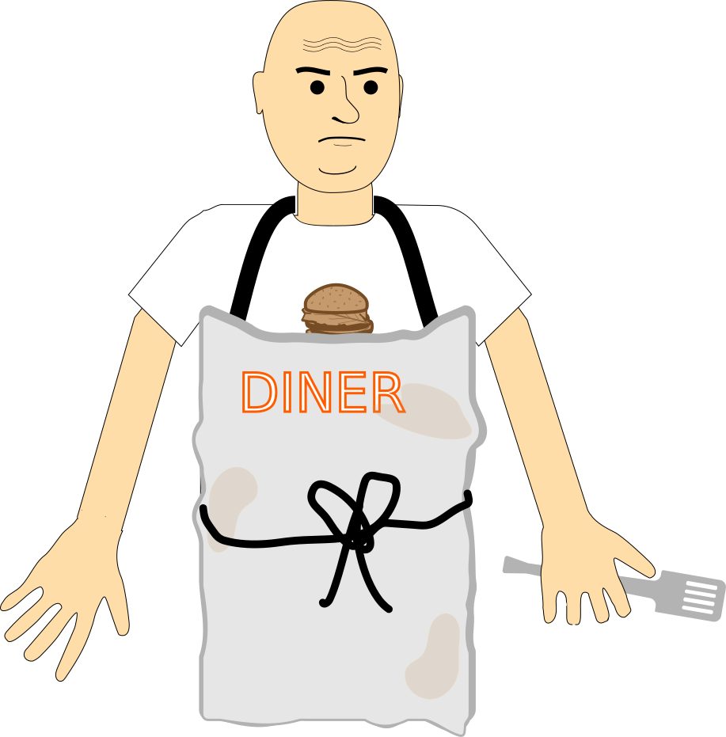
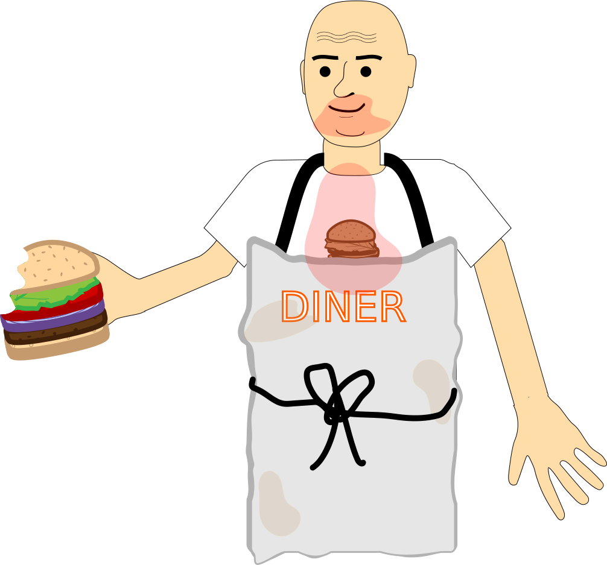
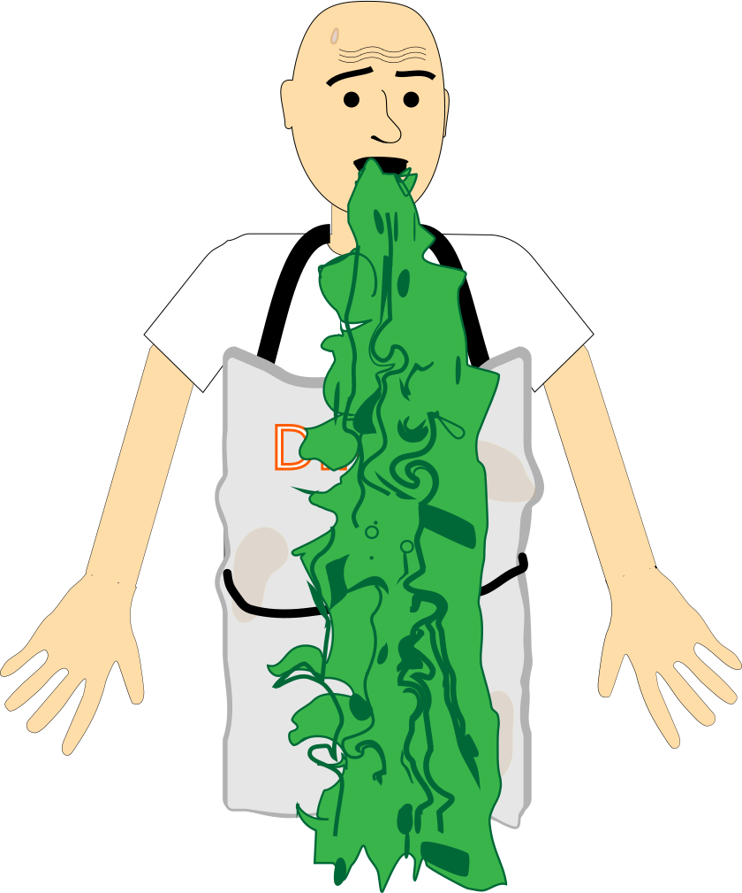
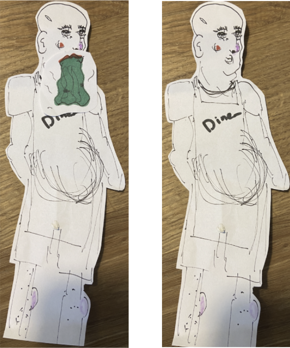
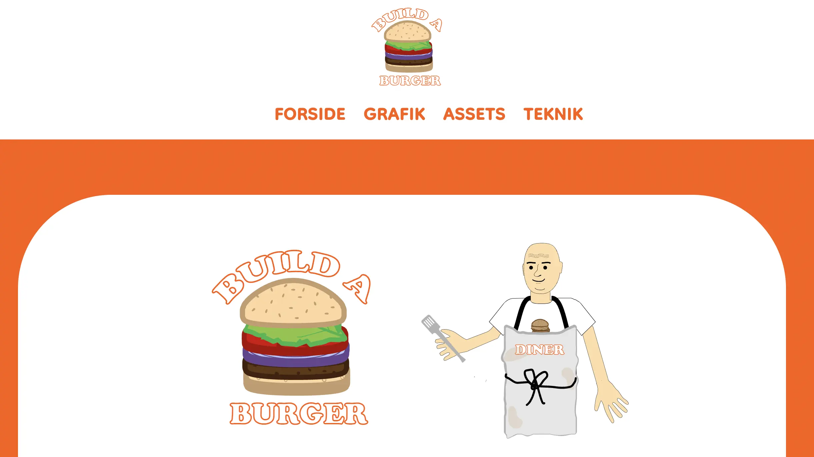
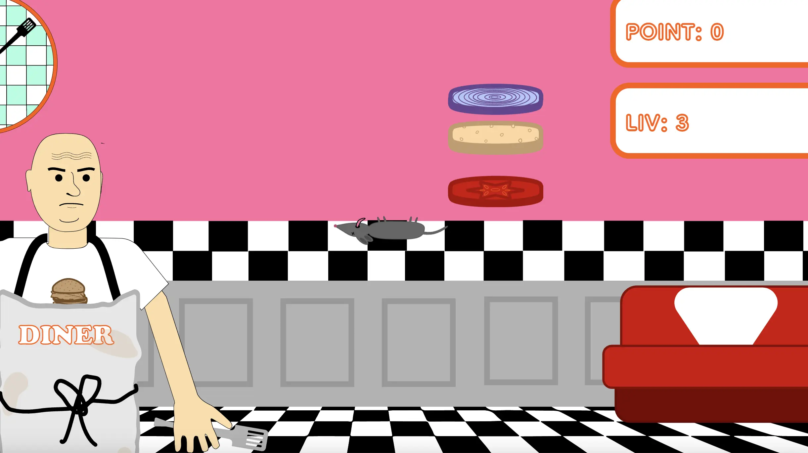
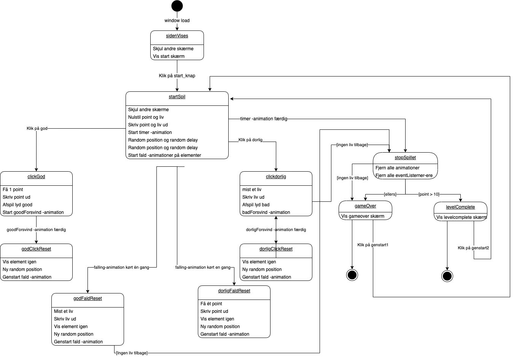
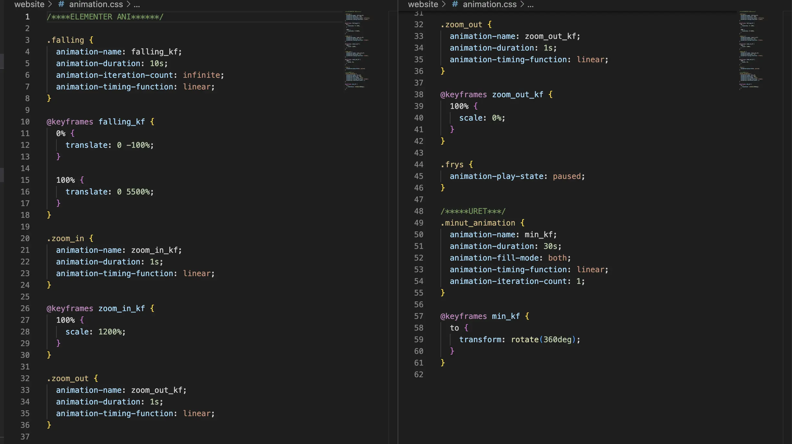
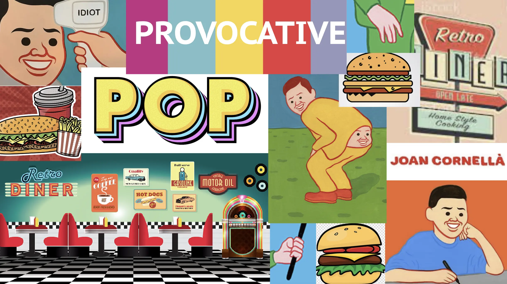
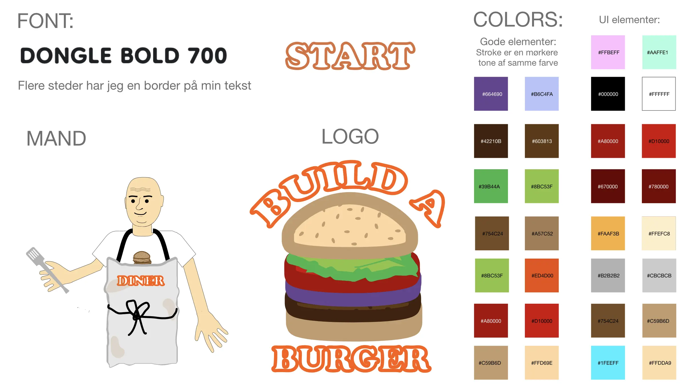